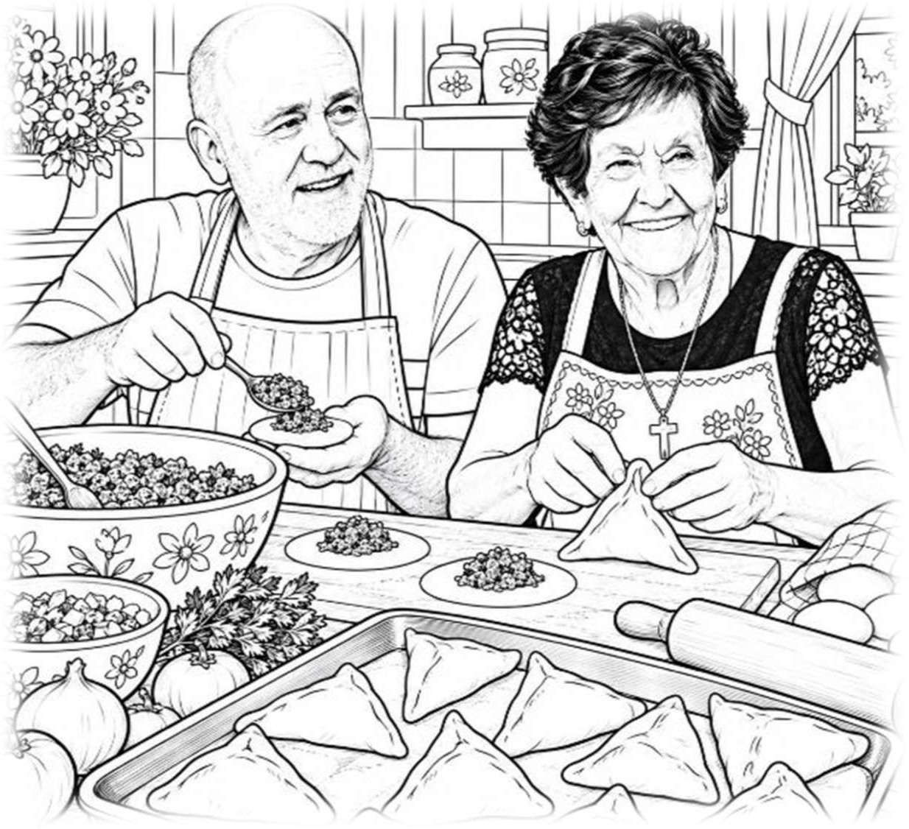

A Esfirra da Mãe: Um Sabor Impossível de Esquecer
Quando perguntei ao José Ailton qual era sua comida preferida entre

tantas delícias que sua mãe preparava, ele demorou horas para responder. E não era para menos! A lista de sabores guardados na memória era enorme, repleta de receitas que carregavam o tempero e o amor de uma vida inteira.
“São tantas, minha irmã! Mas eu gosto muito da esfirra… Aquela massa macia, aquele sabor tão agradável, aquela massa maravilhosa que só a mãe sabe fazer!”
E assim, entre tantas lembranças deliciosas, a esfirra conquistou seu lugar especial. Mais do que uma receita, ela é um pedacinho da infância, um carinho em forma de comida e a prova de que existem sabores que só as mãos de uma mãe conseguem criar.